765プロライブ劇場の「貼り紙」調査
アイドルマスター ミリオンライブ！ シアターデイズ(以下ミリシタ)は765プロライブ
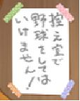
ニコニコ大百科の記述[1]によれば、貼り紙の初出は「ゲッサン」[2]とされる。下図のとおり、ゲッサンの控え室にはミリシタと同様の貼り紙が掲示されており、少なくともミリシタよりも先に登場していることが確認できる(ゲッサン：2014年、ミリシタ：2017年)。また、ゲッサンの同じ控え室には、琴葉の手による注意書きが掲示されていることから考えると、ゲッサンにおける貼り紙類は琴葉が掲示したものと推定される。なお貼り紙の掲示は第4話で確認できるが、第2話[3]では昴と海美が室内で野球で遊んでいる場面が描かれている。昴の室内野球をきっかけに野球禁止の貼り紙が掲示されたものと思われる。
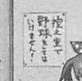
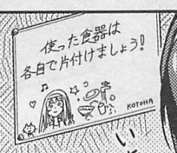
ミリシタでは、レッスンルームでリフティングしていたエレナらを琴葉が注意し、その際に「私がサッカーのこと書いておかなかったから」と述べている[4]。これは明らかに貼り紙のことを指していると考えられる。したがって、ミリシタにおいても貼り紙を掲示したのは琴葉であると判断できる。
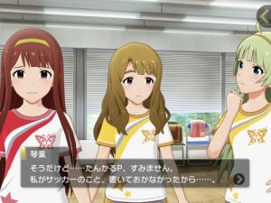
以上により、シアターに掲示された貼り紙は、昴らが室内で野球で遊んだことをきっかけに琴葉が掲示したものであることが確認できた。ただし全ての貼り紙が琴葉の手によるものであるかは不明である。
シアター内に掲示されている貼り紙の一覧を次図に示す。なお一覧データは2021年5月現在の調査に基づくが、今後も追加される可能性が高い。
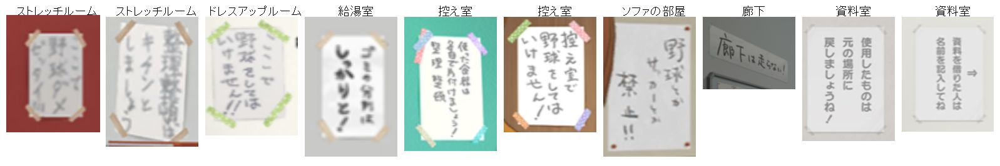
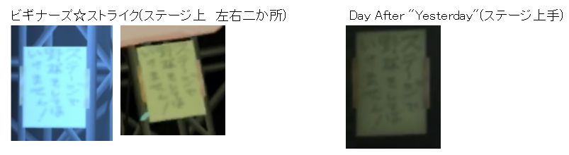
ここではリストアップしないが、貼り紙は「ゲッサン」で多用されている。ゲッサン、シアター以外では、下記の二点が確認できた。
| 場所 | 画像 | 備考 |
|---|---|---|
| 765プロ本社事務所 | 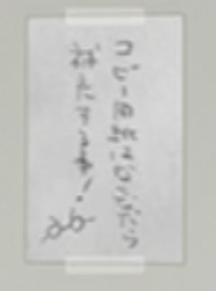 | 本社事務所にも貼り紙が掲示されている。メガネが描かれていることから、律子さんが掲示したものと思われる。 |
| 大型劇場舞台脇(UNION!!等で使用されている舞台) | 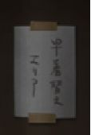 | この貼り紙はシアター内の掲示である可能性もある。しかし、UNION!!で使用される舞台は客席内にせり上がりが存在しており、シアターよりもかなり大型の施設である。またライブレポートで表示される舞台脇の様子も、シアターの舞台脇とは大きく異なっている。そのため、UNION!!のライブは外部の施設を借りて公演していると考え、この貼り紙はシアター外であると判断した。 |
貼り紙は直筆と思われるが、字体はバラバラである。琴葉の直筆のものと比べても、同一人物による字であるとは信じられない。野球禁止の貼り紙は他のアイドルに書かせた可能性は否定できないが、可能性としては低い。貼り紙は怒りに任せて書いたものであり、字体が安定しなかったと考えるのが穏当であろう。
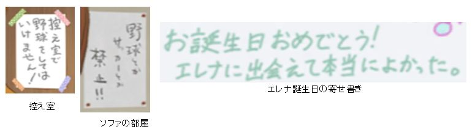
前述のとおり、シアター内に掲示された貼り紙は琴葉の手によるものと考えられる。しかし、ミリシタでは、シアターの運営開始直後(ミリシタサービス開始直後)は琴葉は参加していない。「ジレハ」イベントにて社長が「先日、田中琴葉君が劇場に合流してくれた」と述べており[5]、シアター運営開始から琴葉が参加するまで時間が開いていることがわかる。しかし、シアターには始めから貼り紙が掲示されている。
では、琴葉はいつ貼り紙を書いたのか？
まず、社長は琴葉が「合流」したと述べていることから、琴葉はシアターでは活動していないものの、765プロとは契約済みでアイドル(または練習生)にはなっており、別の場所で活動していると考えられる。とすると、昴の室内野球に悩んだ静香あたりが琴葉に相談して貼り紙を書いてもらった、というシナリオが成り立つかもしれない。かなり無理があるが。
イベント"Persona Voice"では資料室と思しき部屋が登場し、その部屋にも貼り紙が掲示されている。その貼り紙は「使用したものは 元の場所に 戻しましょうね！」と、比較的穏やかな口調である。そして、貼り紙のすぐ近くにはバレーボールがある。
つまりこれは、シアター内でのバレーボールは禁止されていないということなのだろうか？さすがの琴葉も風花には言えなかった？…普通に考えれば屋外での球技は禁止されていないってだけだろうけど。ゲッサンでは駐車場(?)で昴がバレーボールしているし。
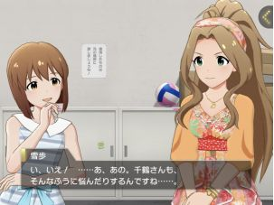
野球禁止の貼り紙には文末に！マークがついており、！マークの数は1~3個である。また、！マークの数が多いものほど口調も強い。何度注意しても昴が止めないので、口調もだんだん厳しくなり、！マークの数も増えていったのであろう。
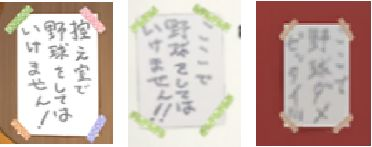
ビギナーズ☆ストライクとDay After "Yesterday"のステージ脇に掲示されている貼り紙は、どれも同じである。貼り紙をコピーすることを覚えたようだ。
シアターの貼り紙に関する情報を整理し、以下の知見を得た。
アイドルマスター ミリオンライブ！およびアイドルマスター ミリオンライブ！ シアターデイズはバンダイナムコエンターテインメント社が所有するコンテンツです。本書では同コンテンツの画像等を引用の範囲内で使用しています。